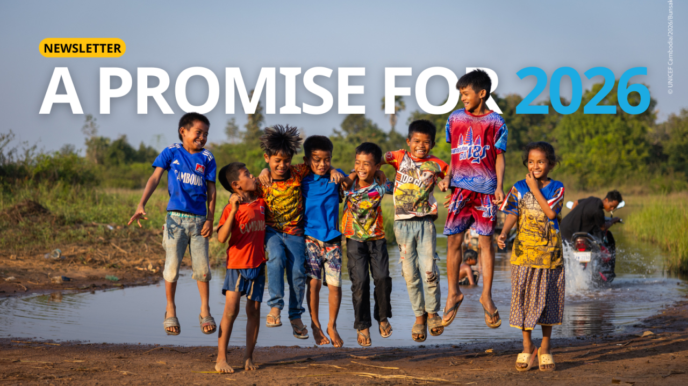

ស្ថានភាពជំងឺកូវីដ-១៩ ក្នុងប្រទេសកម្ពុជា (២០២៦)
COVID-19 Pandemic in Cambodia (2026)

១. ស្ថានភាពបច្ចុប្បន្ន
គិតត្រឹមដើមឆ្នាំ ២០២៦ កម្ពុជាបានឈានចូលដល់ដំណាក់កាលគ្រប់គ្រងសុខភាពសាធារណៈប្រកបដោយនិរន្តរភាព។ រាល់សកម្មភាពសង្គមត្រូវបានវិលត្រឡប់ទៅរកភាពប្រក្រតីទាំងស្រុង។
1. Current Situation
As of early 2026, Cambodia has moved into a state of sustained public health management. All social activities have fully returned to pre-pandemic normalization.
២. លក្ខខណ្ឌធ្វើដំណើរ
រាជរដ្ឋាភិបាលបានសម្របសម្រួលនីតិវិធីនៃការចូលប្រទេសឱ្យកាន់តែងាយស្រួល៖
- មិនតម្រូវឱ្យមានកាតចាក់វ៉ាក់សាំង
- មិនតម្រូវឱ្យមានលទ្ធផលតេស្តកូវីដ
- តម្រូវឱ្យប្រើប្រាស់ Cambodia e-Arrival (CeA)
2. Travel Requirements
The Royal Government has streamlined entry procedures for all travelers:
- No vaccination proof required
- No COVID-19 test results required
- Mandatory Cambodia e-Arrival (CeA) card
រូបភាព៖ ប្រព័ន្ធ Cambodia e-Arrival ឌីជីថលថ្មី (CeA)
៣. ការស្តារប្រព័ន្ធសុខាភិបាល
កម្ពុជាបានពង្រឹងហេដ្ឋារចនាសម្ព័ន្ធសុខាភិបាល តាមរយៈការបង្កើតមន្ទីរពិសោធន៍ជីវសុវត្ថិភាពកម្រិតទី៣ (BSL-3) និងប្រព័ន្ធតាមដានជំងឺតាមឌីជីថល។
3. Healthcare Recovery
Cambodia has strengthened its health infrastructure by establishing BSL-3 laboratories and real-time digital surveillance systems.